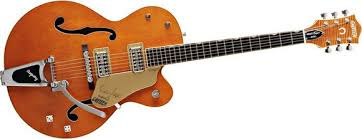
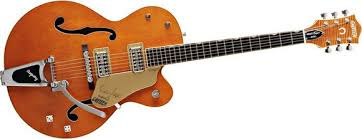

Guitars
History of guitars goes back to 1500-2000 BC in the Middle East, India, and Asia.
Types
- Classical
- Steel string
- Archtop
Classical guitar
Steelstring guitar
Archtop guitar
History of guitars goes back to 1500-2000 BC in the Middle East, India, and Asia.
Classical guitar
Steelstring guitar
Archtop guitar
small conflict branch